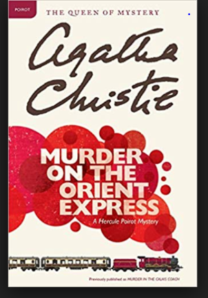

-Agatha Cristie
Murder on the Orient Express is a detective novel by British writer Agatha Christie featuring the detective Hercule Poirot. The elegant train of the 1930s, the Orient Express, is stopped by heavy snowfall with many passengers. A murder is discovered,and Poirot's trip home to London from the Middle East is interrupted to solve the murder.
-Paulo Coehlo
The Alchemist is a novel by Brazilian author Paulo Coelho that was first published in 1988. Originally written in Portuguese, it became a widely translated international bestseller. An allegorical novel, The Alchemist follows a young Andalusian shepherd in his journey to the pyramids of Egypt, after having a recurring dream of finding a treasure there.